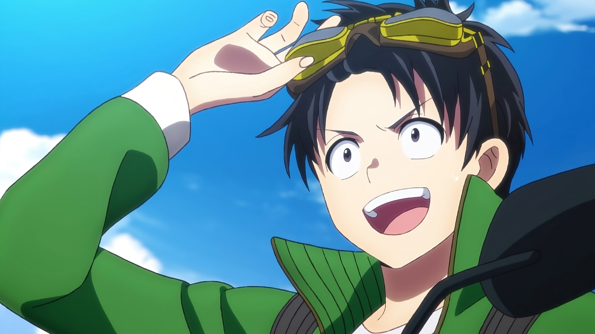
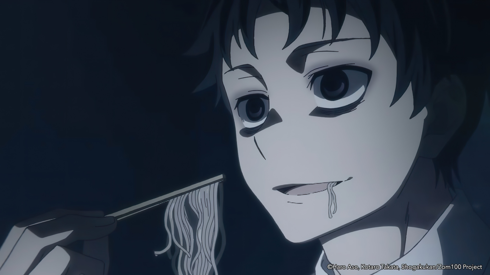
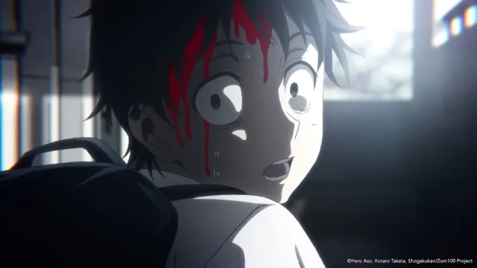
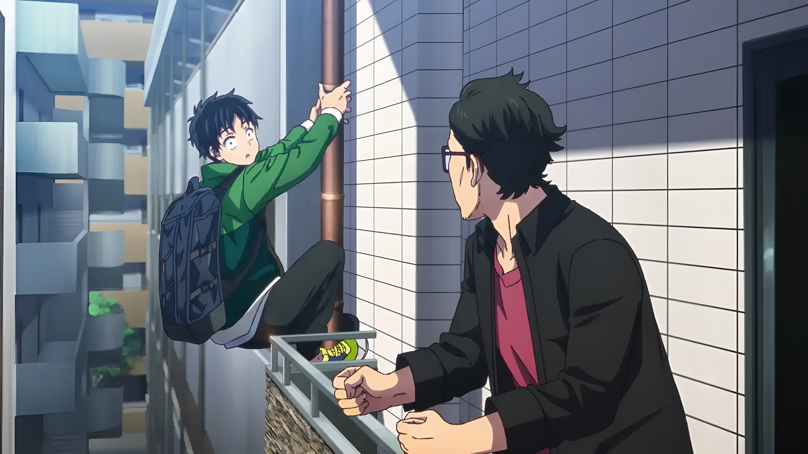
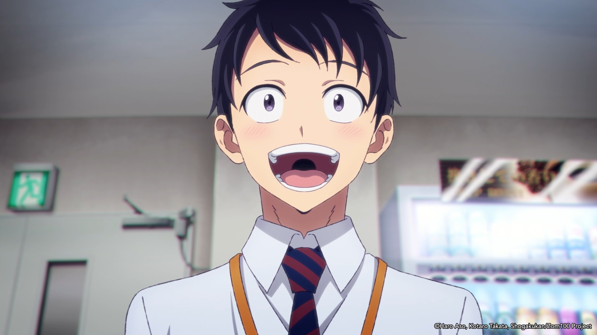
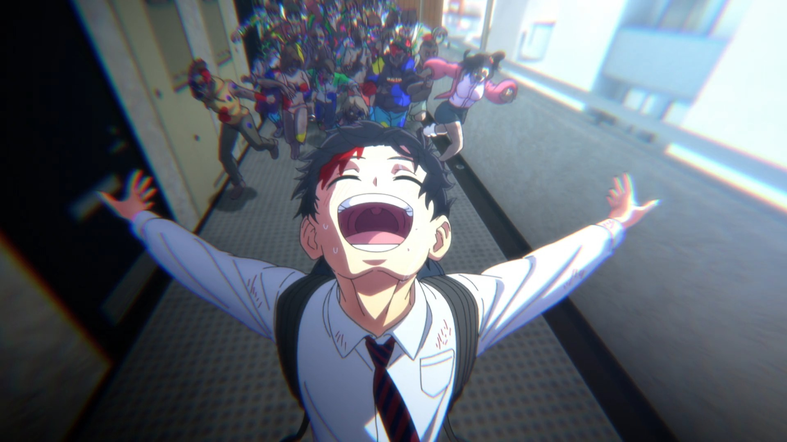

Highly relatable protaganist
Slice-of-life anime series tend to center around relatable, ordinary characters whom viewers can sympathize with on many different levels. However, some slice-of-life series take that a step too far and present generic, self-insert leads who don't really stand for anything and just get swept up in the currents of daily life. Fortunately, Zom 100 struck a better balance with its SOL-style hero, Akira Tendo the office worker. Akira is ordinary enough to be likable, but also distinct enough so he adds gravity to every scene in which he appears. Akira's bro-style friendship with Kencho, his whoops of joy and relief, and his horrific experiences with shady companies make him more than just the boy next door.
Meaningfull office setting
While plenty of slice-of-life anime series take place in high school, a decent number of them are set in offices, such as Wotakoi, My Tiny Senpai, and The Ice Guy & His Cool Female Colleague. Zom 100 also begins in a modern office, but with a dark and meaningful twist.
Has heart break and Tragedy
Generally, slice-of-life anime series have a comedic and perhaps a gently romantic tone to make for easy viewing. Still, these anime series can include drama and heartbreak to add some weight to what's happening, such as two friends fighting or perhaps a loved one's death. Zom 100, as a horror action series, does it even better.
The shows main squad
Akira Tendo, Kenco, and Shizuka Mikazuki are an odd but charming trio who must band together to survive the zombie apocalypse, and they all have wonderful chemistry in the process. Akira and Kencho are best buds who love to tease not just each other, but their new friend Shizuka as well. Shizuka finds them irritating, but she can also see their good side.
Explores more than one area/country
Most slice-of-life anime series take place in the real, contemporary world, typically urban Japan. This creates a comfortably familiar setting to help ease viewers into the story and relate to everything they see. Meanwhile, Zom 100 explores such a setting in refreshing ways that typical SOL anime series never could.
Gives its main character a clear goal
Some slice-of-life fans actually work better when the protagonists have no particular goal, which is especially true for iyashikei anime where it's the relaxing journey that matters rather than the destination. Still, anime fans like a story with some direction, and Zom 100 delivers with its leads Akira Tendo and Kencho.
The visual aids
Normal horror anime series are generous with blood and gore, while Zom 100 depicts blood as multicolor paint. That may look like a form of censorship, but it's actually a comment on how Akira Tendo sees the world after his horrific office job ended. Akira thought the world was dull and gray, but now he's seeing all its splendid colors.